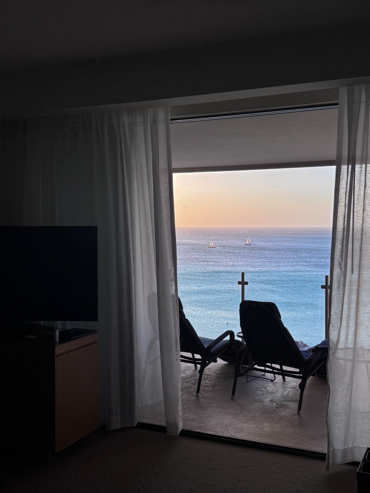
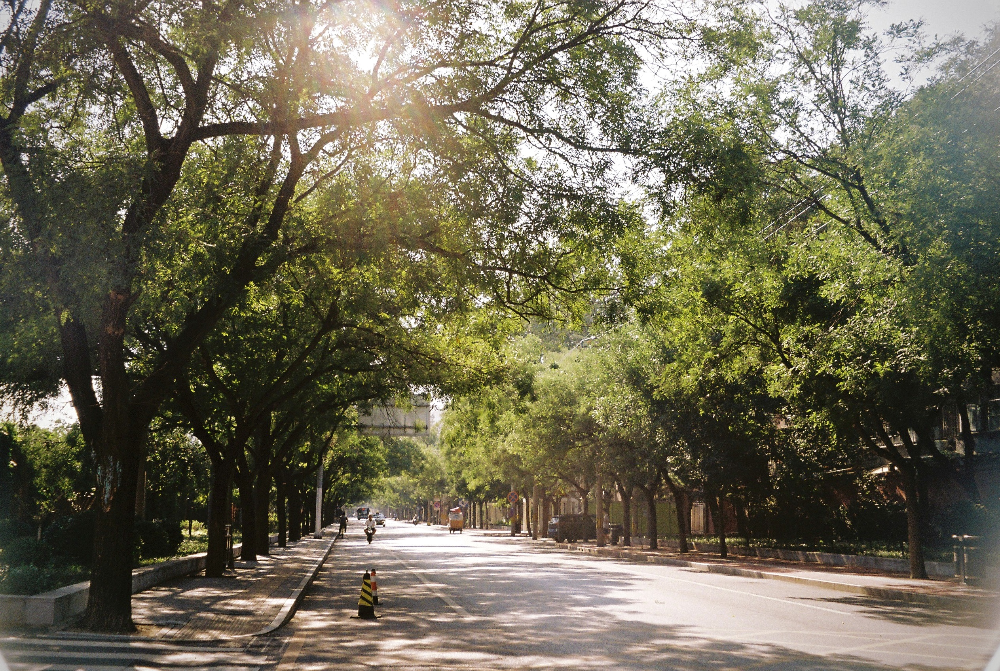
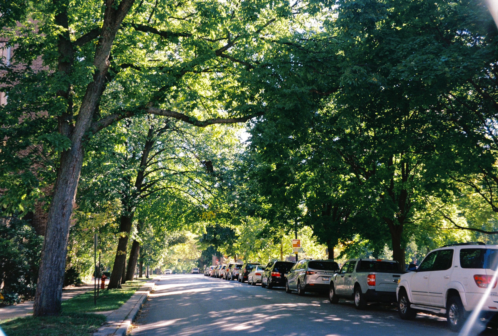
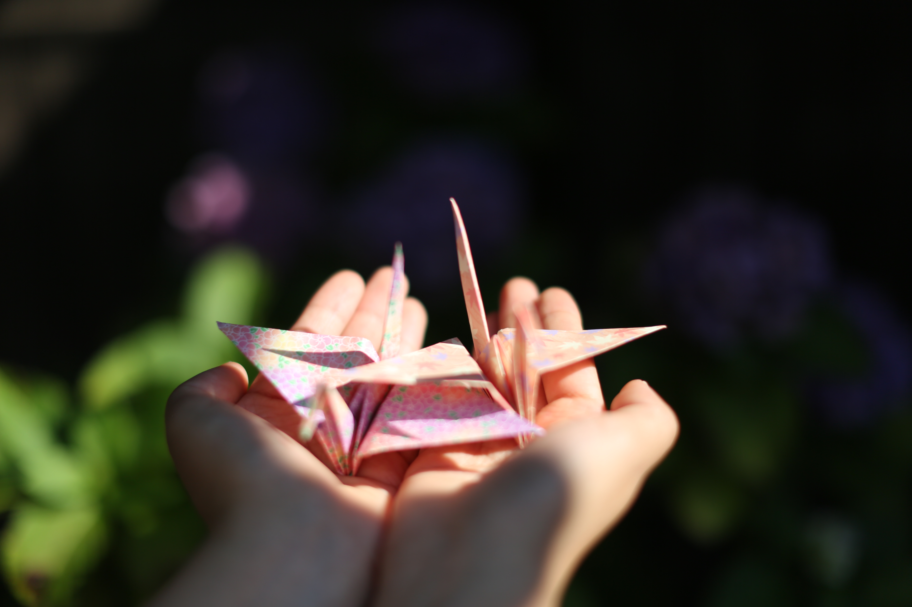
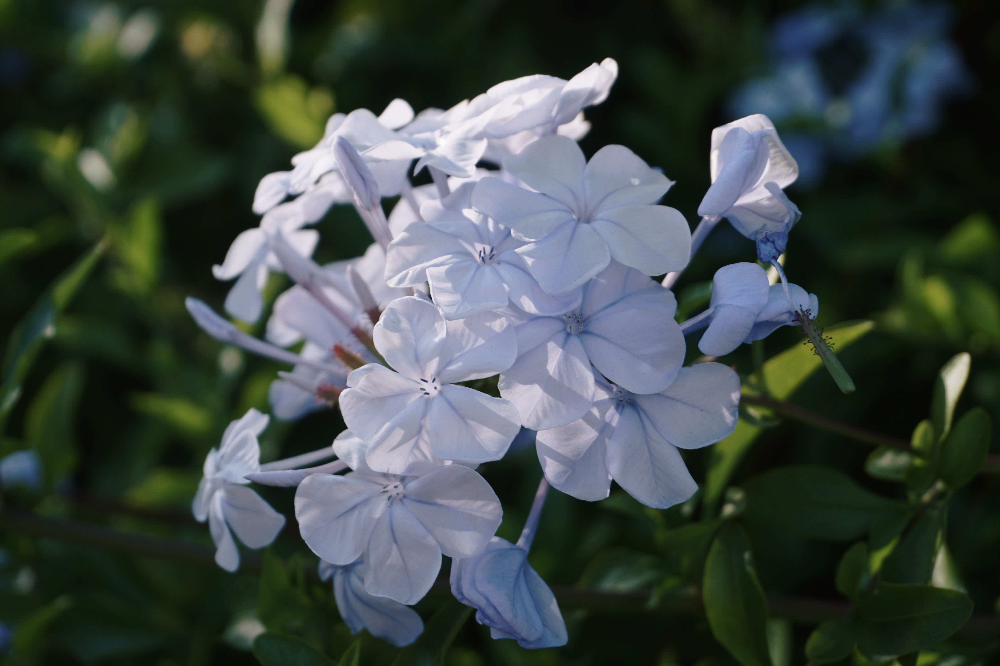
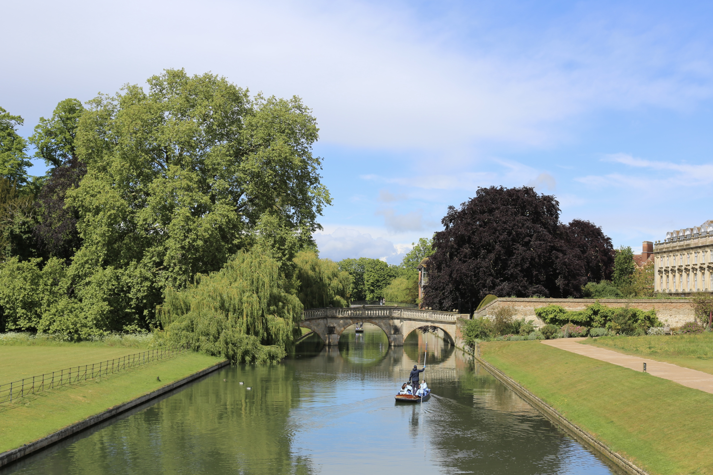
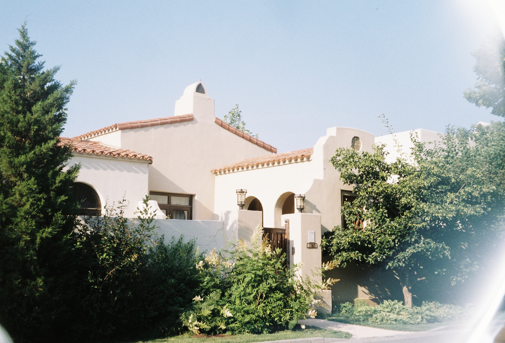
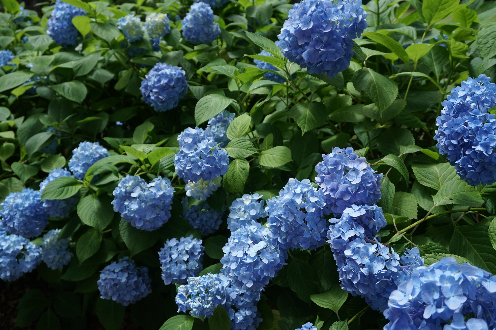
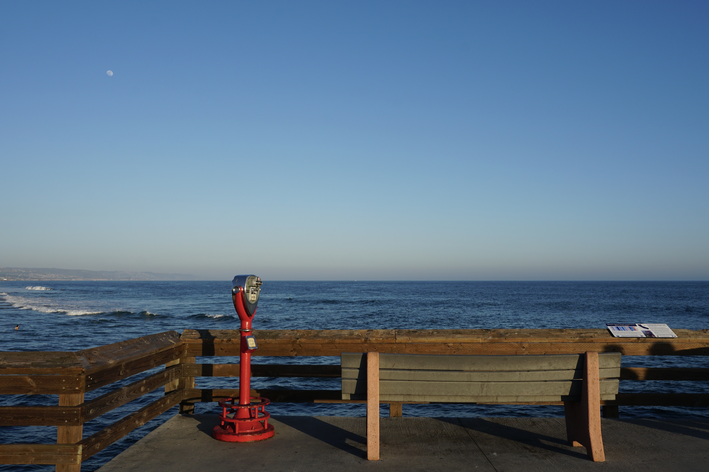

Aruba — photo

A moment I noticed
A view through an open door. The doorway makes a small frame for the water and sky.
Aruba
Beijing — photo

A moment I noticed
Sunlight falls through the trees. Small patches of light break up the path.
Beijing
Chapel Hill — photo

A moment I noticed
Trees stand between the lawn and the buildings. Their branches divide the view into little pieces.
Chapel Hill
Evaston — photo

A moment I noticed
The path curves beneath an evening sky. Along the horizon, the color is still changing.
Evaston
Kyoto — photo

A moment I noticed
A little light catches the edges of the petals. The leaves behind them fall into shadow.
Kyoto
LA — photo

A moment I noticed
Small pale flowers gather into one shape. Looking closer, each flower has its own edges.
LA
Cambridge — photo

A moment I noticed
The sky appears twice: once above the shore, and once on the water.
Cambridge
Paris — photo

A moment I noticed
Rows of fruit make small blocks of color. There is a different shape in every box.
Paris
Qinhuangdao — photo

A moment I noticed
A pale wall sits between the trees. Green leaves reach into the view from both sides.
Qinhuangdao
Tokyo — photo

A moment I noticed
Several shades of blue sit among the leaves. Even the flowers beside each other are different.
Tokyo
Irvine — photo

A moment I noticed
A thin line of white marks where a wave meets the shore. There is another line just behind it.
Irvine